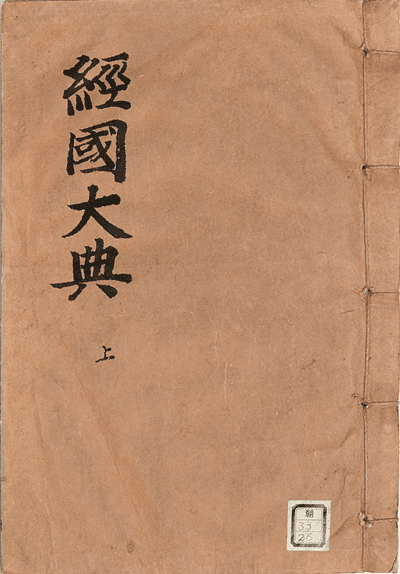
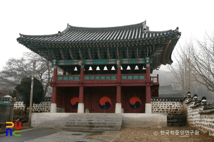
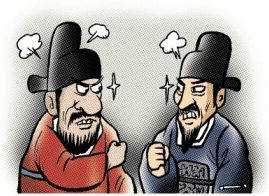
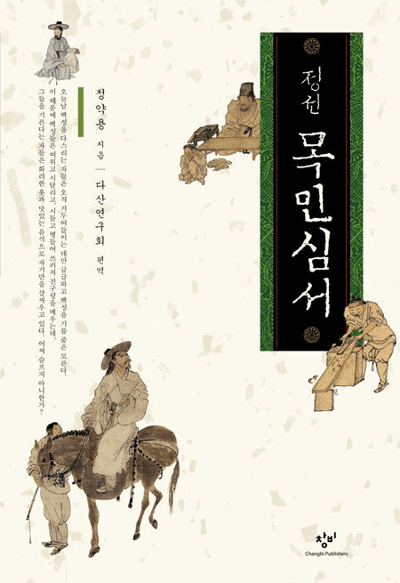

직장 생활하다 보면 살인 충동 느껴지는 순간이 있음
전임자가 역대급 똥을 싸질러 놓고,
A4 용지 반 장짜리 인수인계서 딸랑 던져준 뒤
"모르는 거 있으면 카톡 하세요 ㅎㅎ" 하고
이직런 해버리는 거임
당연히 다음 날 카톡 보내면 읽씹임

근데 조선시대 조상들은 이 꼴을 절대 못 참았음
그래서 경국대전에 아예 대못을 박아 만든 제도가 바로 해유(解由)임
간단히 요약하면 후임자가 인수인계 완벽하다고 확인 도장 안 찍어주면
다음 부서 출근도 못 하고 월급도 영구 정지 시키는 제도였음
조선시대에 수령이나 관원이 임기가 끝나 다른 곳으로 발령이 났다?
요즘 같으면 송별회 회식하고 짐 싸서 올라가면 끝이지만,
조선 공무원은 이때부터 진짜 지옥문이 열렸음
떠나는 전임자는 그동안 자기가 관리하던 세금, 쌀창고 곡식, 무기고 화살 개수는 기본이고
관청 책장에 꽂힌 책 한 권, 부엌 솥단지, 방석 개수까지 빠짐없이
다 적은 재고,회계 명세서를 후임자한테 바쳐야 했음
절차도 숨이 턱턱 막힘
1. 후임자가 창고 까보고 장부 대조해서 빵꾸 난 거 없음 ㅇㅋ 확인 도장을 찍어줌
2. 그 문서를 상급 관청(관찰사,호조)에 올려서 2차 회계 감사를 통과함
3. 최종 인사팀인 이조(무관은 병조)에서 해유첩,조흘첩(최종 클리어 증명서)을 끊어줌
만약 후임자가 도장을 안 찍어줘서 이 증명서를 못 받으면 어떻게 되냐?
새 관직 발령이 나도 임명장 발급 거부
당연히 월급 칼같이 정지
승진 영구 잠금
만약 공금이나 관청 쌀이 빈 것이 걸리면? 다 물어낼 때까지 백수 상태로 박제됨
본인이 못 갚으면 아들,손자,일가친척 재산까지 압류 딱지 붙음 ㅋㅋㅋ
전임자 입장에선 후임자 도장 하나에 내 운명이 달려있는거임

이러니 인수인계 날 관아 분위기가 훈훈할 리가 없겠지?
전임자 입장에선 재임 기간에 슬쩍 빼먹은 쌀이랑 아전들이
해먹은 구멍을 어떻게든 메꿔야 하니까 온갖 분식회계를 동원함
반작,허류: 창고는 텅 비었는데 장부 숫자만 꽉 차 있는 것처럼 가라치기
분석,화수: 쌀가마니 밑바닥에 왕겨나 돌멩이 채워 넣기, 쌀에 물 뿌려서 부피 불리기
그래놓고 후임자가 도착하면 버선발로 뛰어나가 소 잡고 술상 차려주면서
"아우님~ 관행이 다 그런 거 아니겠음?? ㅎㅎ 좋은 게 좋은 거니 대충 도장 찍고 넘어갑시다" 하고 구슬림
문제는 후임자가 여기서 "형님만 믿습니다!" 하고
도장을 찍어주는 순간 인생이 나락으로 간다는 거임
도장을 찍는 순간 전임자가 해먹은 횡령액이 100% 후임자 내 책임으로 자동 승계되거든
나중에 암행어사 뜨거나 감사 나왔을 때 "이거 전임자가 해먹은 건데요?" 해봤자 소용없음
조정에선 "응~ 네가 이상 없다고 확인 도장 찍었잖아? 네가 전 재산 털어서 메꿔"가 엔딩임
그래서 깐깐한 후임자가 부임하면 창고 문 다 뜯어내고 가마니마다 꼬챙이 찔러서 왕겨 섞였나 검사하고,
활시위 끊어진 거랑 장부 오타까지 조사하면서 도장을 안 찍어줌
반대로 세상 물정 모르는 순진한 도련님이 초임 사또로 와서 아전들이랑 전임자 감언이설에 속아 도장 찍어줬다가,
전임자는 한양으로 런하고
본인이 폭탄 돌리기 마지막 주자가 되어 집안 기둥뿌리 뽑히는 인수인계 사기 피해자도 수두룩 했음

진짜 공포물은 따로 있었는데,
조선 후기 붕당정치 시절, 나랑 당파가 다른 놈이나 평소 사이 안 좋던 원수가 내 후임으로 발령 났을 때임
후임자 손에 합법적으로 남의 인생을 조질 수 있는 절대반지가 쥐어진 거나 마찬가지였음
"어? 창고 쌀이 반 되 모자라는데요?"
"어? 관청 책 한 권 표지가 찢어졌는데요?"
"관아 기와가 한 장 깨졌네? 수리해 놓기 전엔 도장 못 찍어줌 ㅅㄱ"
이렇게 먼지 한 톨까지 트집 잡으면서 고의로 몇 달, 심지어 몇 년씩 해유 도장을 안 찍어주는 합법적 인성질이 벌어짐
당하는 전임자는 한양 올라가서 복직도 못 하고 월급도 끊긴 채 손가락만 빨다가,
후임자 바짓가랑이 잡으러 다시 시골까지 내려가서 빌어야 하는 생지옥을 맛봐야 했음

이 인수인계 전쟁이 얼마나 공직 사회 최대의 지뢰밭이었냐면,
그 정약용조차 지방관 필독서인 목민심서 맨 마지막 파트를
통째로 무사히 인수인계 끝내고 집에 곱게 가는 법(해관육조)에 할애했을 정도임
정약용이 남긴 현실 조언을 요즘 말로 번역하면 대충 이럼
전임자한테: 퇴임할 때 관청에 있던 벼루나 책 한 권이라도 기념품이라고 챙기지 마셈
님 그거 약점 잡히면 해유 박살 남... 무조건 빈손으로 깔끔하게 나오셈
후임자한테: 아무리 깐깐하게 보는 게 맞다지만,
너무 야박하게 전임자 먼지까지 다 털어서 사람 인생 조져놓는 건 선비의 도리가 아님..
큰 비리 아니면 아전들 장난질만 잡고 전임자 숨통은 좀 트여주셈...
정약용이 제발 살살 좀 하라고 책에다 말릴 정도였으니
현장 기싸움이 얼마나 살벌했는지 짐작이 갈정도
요즘 회사에도 후임자가 인수인계 완료 버튼 안 눌러주면 이직처 월급 정지 + 퇴직금 보류 법 도입하면,
퇴사 2주 전부터 전임자가 백과사전급 인수인계서를 써서 바치고 구두도 매일 닦아주지 않을까?
세 줄 요약
1. 조선시대 공무원은 후임자한테 창고 재고부터 책 한 권까지 검수받고 도장을 못 받으면 다음 부서 임명도 안 나고 월급도 영구 정지됐음
2. 어설프게 도장 찍어주면 전임자가 해먹은 횡령액을 후임자가 100% 독박 써야 해서,
눈탱이 치려는 전임자와 안 속으려는 후임자의 기싸움이 장난 아니었음
3. 특히 당파 다른 앙숙이 후임으로 오면 기와 깨진 것까지 트집 잡아 몇 년씩 도장을 안 찍어줘서,
전임자를 강제 무급 백수로 말려 죽이는 합법적 인성질이 판을 침
댓글
수집 당시 댓글 519개
· ㅇㅇ · 11.12 22:10:02
ㅇㅇ · 11.12 21:29:32
ㅇㅇ · 11.12 21:30:53
· 겐쉰프 · 11.12 21:32:49
· ㅇㅇ · 11.12 21:35:04
· 겐쉰프 · 11.12 21:35:26
· 겐쉰프 · 11.12 21:35:39
· ㅇㅇ · 11.12 21:36:00
· 겐쉰프 · 11.12 21:36:24
· 겐쉰프 · 11.12 21:36:38
· ㅇㅇ · 11.12 21:37:13
· 겐쉰프 · 11.12 21:37:20
· 겐쉰프 · 11.12 21:37:28
· 겐쉰프 · 11.12 21:38:06
· ㅇㅇ · 11.12 21:42:18
· ㅇㅇ · 11.12 21:58:44
· ㅇㅇ · 11.12 22:47:55
· ㅇㅇ · 11.13 00:10:21
· ㅇㅇ · 11.13 00:11:15
· ㅇㅇ · 11.13 00:15:29
· ㅇㅇ · 11.13 07:10:59
· ㅇㅇ · 11.13 11:50:22
· ㅇㅇ · 11.13 13:05:36
· 겐쉰프 · 11.13 13:11:06
· 겐쉰프 · 11.13 13:11:23
· ㅇㅇ · 11.13 14:29:14
· 겐쉰프 · 11.13 14:38:07
· 겐쉰프 · 11.13 14:38:24
· 겐쉰프 · 11.13 14:40:20
· 겐쉰프 · 11.13 14:40:30
· ㅇㅇ · 11.13 17:01:24
ㅇㅇ · 11.12 21:32:23
· 겐쉰프 · 11.12 21:33:07
ㅇㅇ · 11.12 21:34:16
· ㅇㅇ · 11.12 21:34:23
겐쉰프 · 11.12 21:34:44
ㅇㅇ · 11.12 21:35:39
겐쉰프 · 11.12 21:39:23
백돌이 · 11.12 21:41:13
ㅇㅇ · 11.12 21:42:26
· ㅇㅇ · 11.12 21:51:50
ㅇㅇ · 11.12 21:45:12
· ㅇㅇ · 11.13 08:42:00
ㅇㅇ · 11.12 21:46:41
정공부자 · 11.12 21:50:28
ㅇㅇ · 11.12 21:51:36
ㅇㅇ · 11.12 22:04:23
ㅇㅇ · 11.12 22:06:53
ㅇㅇ · 11.12 22:08:38
한남은 시대를 막론하고 한남이다
2456778 · 11.12 22:14:01
· ㅇㅇ · 11.12 23:19:47
ㅇㅇ · 11.12 22:15:12
· ㅇㅇ · 11.12 22:36:40
· ㅇㅇ · 11.12 22:39:04
· ㅇㅇ · 11.12 22:41:13
· ㅇㅇ · 11.12 22:46:56
· ㅇㅇ · 11.13 10:11:13
ㅇㅇ · 11.12 22:16:57
ㅇㅇ · 11.12 22:18:02
ㅇㅇ · 11.12 22:19:57
ㅇㅇ · 11.12 22:23:30
ㅇㅇ · 11.12 22:28:09
ㅇㅇ · 11.12 22:30:30
ㅇㅇ · 11.12 22:46:16
ㅇㅇ · 11.12 22:48:53
ㅇㅇ · 11.12 22:53:18
ㅇㅇ · 11.12 22:56:48
ㅇㅇ · 11.12 23:05:45
ㅇㅇ · 11.12 23:28:30
ㅇㅇ · 11.12 23:31:32
ㅇㅇ · 11.12 23:53:42
ㅇㅇ · 11.13 00:12:19
ㅇㅇ · 11.13 00:12:21
· ㅇㅇ · 11.13 04:56:52
환란 전 교회 휴거 · 11.13 00:29:27
ㅇㅇ · 11.13 01:44:44
문재인대통령 · 11.13 01:50:30
ㅇㅇ · 11.13 02:24:09
· ㅇㅇ · 11.13 02:25:32
· ㅇㅇ · 11.13 10:12:08
· 겐쉰프 · 11.13 14:41:21
ㅇㅇ · 11.13 02:25:35
ㅇㅇ · 11.13 02:41:56
ㅇㅇ · 11.13 02:47:07
ㅇㅅㅇ · 11.13 03:49:16
ㅇㅇ · 11.13 04:57:23
ㅇㅇ · 11.13 04:57:29
ㅇㅇ · 11.13 07:20:16
ㅇㅇ · 11.13 07:20:51
ㅇㅇ · 11.13 07:27:50
ㅇㅇ · 11.13 07:42:05
· ㅇㅇ · 11.13 07:42:51
ㅇㅇ · 11.13 08:28:25
ㅇㅇ · 11.13 09:51:23
ㅇㅇ · 11.13 10:10:00
ㅇ.....ㅇ · 11.13 10:12:31
ㅇㅇ · 11.13 11:33:14
ㅇㅇ · 11.13 12:45:57
· ㅇㅇ · 11.13 12:48:09
ㅇㅇ · 11.13 19:06:00
· Кошечка · 11.12 21:09:56
· ㅇㅇ · 11.12 21:13:31
· ㅇㅇ · 11.12 21:18:30
· ㅇㅇ · 11.12 21:20:24
· ㅇㅇ · 11.12 21:21:29
ㅇㅇ · 11.10 21:21:05
· 겐쉰프 · 11.12 21:20:39
ㅇㅇ · 11.10 21:24:49
아이스 · 11.10 21:27:58
비신마타라 · 11.10 21:28:13
· ㅇㅇ · 11.12 22:05:54
ㅇㅇ · 11.10 21:28:51
· 겐쉰프 · 11.12 21:20:29
ㅇㅇ · 11.10 21:31:31
ㅇㅇ · 11.10 22:09:48
· 겐쉰프 · 11.12 21:20:15
ㅇㅇ · 11.10 22:12:27
· ㅇㅇ · 11.12 21:11:34
· ㅇㅇ · 11.12 21:14:23
· 겐쉰프 · 11.12 21:19:25
· ㅇㅇ · 11.12 21:31:28
· ㅇㅇ · 11.13 07:24:47
ㅇㅇ · 11.10 22:33:57
· ㅇㅇ · 11.10 23:14:40
ㅇㅇ · 11.10 22:41:52
chul-lin-yee · 11.10 23:16:59
ㅇㅇ · 11.11 00:36:44
ㅇㅇ · 11.11 01:03:32
ㅇㅇ · 11.11 01:06:27
ㅇㅇ · 11.12 01:13:35
· 겐쉰프 · 11.12 21:19:04
겐쉰프 · 11.12 21:08:46
· ㅇㅇ · 11.12 21:14:50
· 겐쉰프 · 11.12 21:15:53
· ㅇㅇ · 11.12 21:22:37
· 겐쉰프 · 11.12 21:23:54
· 겐쉰프 · 11.12 21:24:14
· ㅇㅇ · 11.12 21:27:53
· 겐쉰프 · 11.12 21:30:42
· 겐쉰프 · 11.12 21:31:12
· 겐쉰프 · 11.12 21:31:23
· 겐쉰프 · 11.12 21:31:33
· 겐쉰프 · 11.12 21:32:00
· 겐쉰프 · 11.12 21:32:12
· 겐쉰프 · 11.12 21:33:44
· 겐쉰프 · 11.12 21:33:52
· ㅇㅇ · 11.12 22:17:36
· 겐쉰프 · 11.12 22:19:27
· 겐쉰프 · 11.12 22:19:55
· 겐쉰프 · 11.12 22:20:55
· 겐쉰프 · 11.12 22:21:25
겐쉰프 · 11.12 21:08:55
· ㅇㅇ · 11.12 21:24:24
ㅇㅇ · 11.12 21:09:00
· ㅇㅇ · 11.12 21:11:27
겐쉰프 · 11.12 21:09:01
겐쉰프 · 11.12 21:09:06
· 슈피슈와 · 11.12 21:17:13
헌트 · 11.12 21:09:39
かなたん · 11.12 21:10:23
· 슈피슈와 · 11.12 21:17:29
ㅇㅇ · 11.12 21:11:25
ㅇㅇ · 11.12 21:11:30
ㅇㅇ · 11.12 21:11:43
· 소설쟁이 · 11.12 22:33:04
ㅇㅇ · 11.12 21:11:53
ㅇㅇ · 11.12 21:13:00
ㅇㅇ · 11.12 21:13:29
ㅇㅇ · 11.12 21:15:10
· ㅇㅇ · 11.12 21:24:01
ㅇㅇ · 11.12 21:15:46
· ㅇㅇ · 11.12 22:48:40
· ㅇㅇ · 11.13 06:14:14
ㅇㅇ · 11.12 21:16:01
· ㅇㅇ · 11.12 21:18:39
돌아온애우 · 11.12 21:18:37
· ㅇㅇ · 11.12 21:18:48
· ㅇㅇ · 11.12 22:13:35
· ㅇㅇ · 11.12 23:17:41
ㅇㅇ · 11.12 21:19:22
· 돌아온애우 · 11.12 21:25:39
· ㅇㅇ · 11.12 21:25:39
· ㅇㅇ · 11.12 21:36:51
· 돌아온애우 · 11.12 21:38:01
· ㅇㅇ · 11.12 21:38:41
· ㅇㅇ · 11.12 21:48:03
· ㅇㅇ · 11.12 21:49:20
· ㅇㅇ · 11.12 21:56:55
· ㅇㅇ · 11.12 22:34:11
· ㅇㅇ · 11.12 23:10:27
· ㅇㅇ · 11.13 06:37:20
· ㅇㅇ · 11.13 07:13:20
· ㅇㅇ · 11.13 08:40:21
ㅇㅇ · 11.12 21:20:39
つついあやめのおっと · 11.12 21:21:26
아너무너무섭다 · 11.12 21:23:03
· 겐쉰프 · 11.12 21:24:52
ㅇㅇ · 11.12 21:23:40
ㅇㅇ · 11.12 21:23:46
ㅇㅇ · 11.12 21:26:45
· ㅇㅇ · 11.12 23:07:28
· ㅇㅇ · 11.12 23:07:50
· ㅇㅇ · 11.12 23:08:04
· ㅇㅇ · 11.12 23:09:08
· ㅇㅇ · 11.12 23:09:12
· ㅇㅇ · 11.12 23:09:15
· ㅇㅇ · 11.12 23:09:37
· ㅇㅇ · 11.12 23:10:15
· ㅇㅇ · 11.12 23:10:17
· ㅇㅇ · 11.12 23:11:11
· ㅇㅇ · 11.12 23:11:30
· ㅇㅇ · 11.12 23:11:51
· ㅇㅇ · 11.12 23:12:30
· ㅇㅇ · 11.12 23:12:40
· ㅇㅇ · 11.12 23:13:11
· ㅇㅇ · 11.12 23:13:43
· ㅇㅇ · 11.12 23:14:11
· ㅇㅇ · 11.12 23:14:44
· ㅇㅇ · 11.12 23:15:12
· ㅇㅇ · 11.12 23:15:12
· ㅇㅇ · 11.12 23:15:26
· ㅇㅇ · 11.12 23:15:49
· ㅇㅇ · 11.12 23:16:46
· ㅇㅇ · 11.12 23:17:18
· ㅇㅇ · 11.12 23:17:52
· ㅇㅇ · 11.12 23:18:20
· ㅇㅇ · 11.12 23:19:05
· ㅇㅇ · 11.12 23:19:30
· ㅇㅇ · 11.12 23:20:05
· ㅇㅇ · 11.12 23:20:42
· ㅇㅇ · 11.12 23:21:48
· ㅇㅇ · 11.12 23:21:49
· ㅇㅇ · 11.12 23:22:10
· ㅇㅇ · 11.12 23:22:11
· ㅇㅇ · 11.12 23:23:32
· ㅇㅇ · 11.12 23:23:55
· ㅇㅇ · 11.12 23:24:42
· ㅇㅇ · 11.12 23:24:48
· ㅇㅇ · 11.12 23:24:50
· ㅇㅇ · 11.12 23:25:20
· ㅇㅇ · 11.12 23:25:53
· ㅇㅇ · 11.12 23:25:54
· ㅇㅇ · 11.12 23:26:19
· ㅇㅇ · 11.12 23:26:31
· ㅇㅇ · 11.12 23:26:34
· ㅇㅇ · 11.12 23:27:24
· ㅇㅇ · 11.12 23:27:35
· ㅇㅇ · 11.12 23:27:57
· ㅇㅇ · 11.12 23:28:06
· ㅇㅇ · 11.12 23:28:27
· ㅇㅇ · 11.12 23:28:45
· ㅇㅇ · 11.12 23:29:08
· ㅇㅇ · 11.12 23:29:30
· ㅇㅇ · 11.12 23:30:00
· ㅇㅇ · 11.12 23:30:18
· ㅇㅇ · 11.12 23:30:44
· ㅇㅇ · 11.12 23:31:26
· ㅇㅇ · 11.12 23:31:50
· ㅇㅇ · 11.12 23:33:03
· ㅇㅇ · 11.12 23:33:50
· ㅇㅇ · 11.12 23:34:15
· ㅇㅇ · 11.12 23:34:50
· ㅇㅇ · 11.12 23:35:15
· ㅇㅇ · 11.12 23:35:21
· ㅇㅇ · 11.12 23:35:52
· ㅇㅇ · 11.12 23:36:30
· ㅇㅇ · 11.12 23:38:15
· ㅇㅇ · 11.12 23:38:33
· ㅇㅇ · 11.12 23:39:32
· ㅇㅇ · 11.12 23:40:17
· ㅇㅇ · 11.12 23:40:49
· ㅇㅇ · 11.12 23:41:37
· ㅇㅇ · 11.12 23:42:05
· ㅇㅇ · 11.12 23:42:40
· ㅇㅇ · 11.12 23:43:43
· ㅇㅇ · 11.12 23:44:10
· ㅇㅇ · 11.12 23:44:43
· ㅇㅇ · 11.12 23:45:24
· ㅇㅇ · 11.12 23:45:31
· ㅇㅇ · 11.12 23:46:07
· ㅇㅇ · 11.12 23:46:36
· ㅇㅇ · 11.12 23:46:51
· ㅇㅇ · 11.12 23:47:58
· ㅇㅇ · 11.12 23:48:04
· ㅇㅇ · 11.12 23:48:37
· ㅇㅇ · 11.13 00:53:27
ㅇㅇ · 11.10 21:20:12
· ㅇㅇ · 11.11 00:07:43
· 고로시아 · 11.11 16:46:59
· ㅇㅇ · 11.12 21:14:49
· 겐쉰프 · 11.12 21:20:55
ㅇㅇ · 11.10 21:20:55
· ㅇㅇ · 11.10 21:21:25
· ㅇㅇ · 11.10 21:35:48
· ㅇㅇ · 11.10 22:02:49
· 삼수입갤 · 11.10 22:07:45
· 이지하 · 11.10 22:09:01
· 알아하쇼 · 11.10 22:09:15
· 부키랑랑 · 11.10 22:13:35
· olbersia · 11.10 22:39:32
· ㅇㅇ · 11.12 22:30:04
· ㅇㅇ · 11.12 22:30:14
· ㅇㅇ · 11.12 22:30:17
· ㅇㅇ · 11.12 22:31:10
· ㅇㅇ · 11.12 22:31:32
· ㅇㅇ · 11.12 22:31:52
· ㅇㅇ · 11.12 22:32:19
· ㅇㅇ · 11.12 22:33:12
· ㅇㅇ · 11.12 22:33:55
· ㅇㅇ · 11.12 22:34:41
· ㅇㅇ · 11.12 22:34:50
· ㅇㅇ · 11.12 22:35:04
· ㅇㅇ · 11.12 22:35:20
· ㅇㅇ · 11.12 22:35:34
· ㅇㅇ · 11.12 22:36:04
· ㅇㅇ · 11.12 22:36:24
· ㅇㅇ · 11.12 22:36:36
· ㅇㅇ · 11.12 22:37:09
· ㅇㅇ · 11.12 22:37:18
· ㅇㅇ · 11.12 22:37:35
· ㅇㅇ · 11.12 22:37:36
· ㅇㅇ · 11.12 22:37:47
· ㅇㅇ · 11.12 22:38:06
· ㅇㅇ · 11.12 22:38:18
· ㅇㅇ · 11.12 22:38:28
· ㅇㅇ · 11.12 22:38:42
· ㅇㅇ · 11.12 22:38:47
· ㅇㅇ · 11.12 22:39:03
· ㅇㅇ · 11.12 22:39:08
· ㅇㅇ · 11.12 22:39:13
· ㅇㅇ · 11.12 22:39:48
· ㅇㅇ · 11.12 22:39:59
· ㅇㅇ · 11.12 22:40:22
· ㅇㅇ · 11.12 22:40:53
· ㅇㅇ · 11.12 22:41:19
· ㅇㅇ · 11.12 22:41:37
· ㅇㅇ · 11.12 22:41:55
· ㅇㅇ · 11.12 22:42:29
· ㅇㅇ · 11.12 22:42:55
· ㅇㅇ · 11.12 22:43:28
· ㅇㅇ · 11.12 22:43:56
· ㅇㅇ · 11.12 22:44:27
· ㅇㅇ · 11.12 22:44:36
· ㅇㅇ · 11.12 22:46:39
· ㅇㅇ · 11.12 22:46:44
· ㅇㅇ · 11.12 22:46:54
· ㅇㅇ · 11.12 22:47:00
· ㅇㅇ · 11.12 22:47:12
· ㅇㅇ · 11.12 22:47:37
· ㅇㅇ · 11.12 22:47:58
· ㅇㅇ · 11.12 22:48:14
· ㅇㅇ · 11.12 22:48:19
· ㅇㅇ · 11.12 22:48:54
· ㅇㅇ · 11.12 22:49:33
· ㅇㅇ · 11.12 22:49:44
· ㅇㅇ · 11.12 22:49:51
· ㅇㅇ · 11.12 22:50:05
· ㅇㅇ · 11.12 22:50:07
· ㅇㅇ · 11.12 22:50:37
· ㅇㅇ · 11.12 22:50:50
· ㅇㅇ · 11.12 22:50:57
· ㅇㅇ · 11.12 22:52:10
· ㅇㅇ · 11.12 22:52:15
· ㅇㅇ · 11.12 22:52:34
· ㅇㅇ · 11.12 22:52:58
· ㅇㅇ · 11.12 22:53:25
· ㅇㅇ · 11.12 22:53:46
· ㅇㅇ · 11.12 22:54:38
· ㅇㅇ · 11.12 22:55:19
· ㅇㅇ · 11.12 22:55:36
· ㅇㅇ · 11.12 22:55:51
· ㅇㅇ · 11.12 22:55:54
· ㅇㅇ · 11.12 22:56:33
· ㅇㅇ · 11.12 22:56:44
· ㅇㅇ · 11.12 22:56:47
· ㅇㅇ · 11.12 22:57:15
· ㅇㅇ · 11.12 22:57:30
· ㅇㅇ · 11.12 22:58:08
· ㅇㅇ · 11.12 22:58:24
· ㅇㅇ · 11.12 22:58:48
· ㅇㅇ · 11.12 22:59:50
· ㅇㅇ · 11.12 23:00:09
· ㅇㅇ · 11.12 23:00:38
· ㅇㅇ · 11.12 23:00:49
· ㅇㅇ · 11.12 23:01:58
· ㅇㅇ · 11.12 23:02:09
· ㅇㅇ · 11.12 23:02:53
· ㅇㅇ · 11.12 23:03:01
· ㅇㅇ · 11.12 23:03:05
· ㅇㅇ · 11.12 23:03:16
· ㅇㅇ · 11.12 23:03:31
· ㅇㅇ · 11.12 23:04:07
· ㅇㅇ · 11.12 23:04:11
· ㅇㅇ · 11.12 23:04:35
· ㅇㅇ · 11.12 23:04:37
· ㅇㅇ · 11.12 23:04:57
· ㅇㅇ · 11.12 23:05:20
· ㅇㅇ · 11.12 23:05:55
· ㅇㅇ · 11.12 23:07:03
· ㅇㅇ · 11.12 23:07:06
· ㅇㅇ · 11.12 21:25:15
· ㅇㅇ · 11.12 21:26:02
· ㅇㅇ · 11.12 21:27:10
· ㅇㅇ · 11.12 21:27:39
· ㅇㅇ · 11.12 21:28:21
· ㅇㅇ · 11.12 21:28:48
· ㅇㅇ · 11.12 21:29:20
· ㅇㅇ · 11.12 21:29:23
· ㅇㅇ · 11.12 21:30:17
· ㅇㅇ · 11.12 21:30:45
· ㅇㅇ · 11.12 21:31:06
· ㅇㅇ · 11.12 21:31:19
· ㅇㅇ · 11.12 21:33:56
· ㅇㅇ · 11.12 21:34:00
· ㅇㅇ · 11.12 21:34:28
· ㅇㅇ · 11.12 21:34:53
· ㅇㅇ · 11.12 21:36:58
· ㅇㅇ · 11.12 21:39:01
· ㅇㅇ · 11.12 21:40:07
· ㅇㅇ · 11.12 21:42:32
· ㅇㅇ · 11.12 21:42:34
· ㅇㅇ · 11.12 21:42:55
· ㅇㅇ · 11.12 21:43:02
· ㅇㅇ · 11.12 21:43:50
· ㅇㅇ · 11.12 21:44:49
· ㅇㅇ · 11.12 21:44:56
· ㅇㅇ · 11.12 21:45:08
· ㅇㅇ · 11.12 21:45:48
· ㅇㅇ · 11.12 21:46:10
· ㅇㅇ · 11.12 21:46:51
· ㅇㅇ · 11.12 21:47:38
· ㅇㅇ · 11.12 21:48:18
· ㅇㅇ · 11.12 21:48:48
· ㅇㅇ · 11.12 21:50:31
· ㅇㅇ · 11.12 21:51:13
· ㅇㅇ · 11.12 21:51:49
· ㅇㅇ · 11.12 21:51:59
· ㅇㅇ · 11.12 21:52:40
· ㅇㅇ · 11.12 21:52:41
· ㅇㅇ · 11.12 21:53:39
· ㅇㅇ · 11.12 21:53:54
· ㅇㅇ · 11.12 21:54:20
· ㅇㅇ · 11.12 21:55:28
· ㅇㅇ · 11.12 21:55:29
· ㅇㅇ · 11.12 21:57:05
· ㅇㅇ · 11.12 21:58:05
· ㅇㅇ · 11.12 21:58:22
· ㅇㅇ · 11.12 21:58:35
· ㅇㅇ · 11.12 21:59:28
· ㅇㅇ · 11.12 22:00:08
· ㅇㅇ · 11.12 22:01:06
· ㅇㅇ · 11.12 22:01:46
· ㅇㅇ · 11.12 22:02:32
· ㅇㅇ · 11.12 22:03:01
· ㅇㅇ · 11.12 22:03:51
· ㅇㅇ · 11.12 22:04:02
· ㅇㅇ · 11.12 22:05:08
· ㅇㅇ · 11.12 22:05:40
· ㅇㅇ · 11.12 22:06:05
· ㅇㅇ · 11.12 22:06:38
· ㅇㅇ · 11.12 22:06:41
· ㅇㅇ · 11.12 22:06:54
· ㅇㅇ · 11.12 22:07:40
· ㅇㅇ · 11.12 22:08:12
· ㅇㅇ · 11.12 22:08:41
· ㅇㅇ · 11.12 22:09:14
· ㅇㅇ · 11.12 22:09:19
· ㅇㅇ · 11.12 22:09:34
· ㅇㅇ · 11.12 22:10:04
· ㅇㅇ · 11.12 22:11:03
· ㅇㅇ · 11.12 22:11:54
· ㅇㅇ · 11.12 22:12:20
· ㅇㅇ · 11.12 22:12:57
· ㅇㅇ · 11.12 22:13:22
· ㅇㅇ · 11.12 22:14:10
· ㅇㅇ · 11.12 22:14:25
· ㅇㅇ · 11.12 22:15:22
· ㅇㅇ · 11.12 22:15:52
· ㅇㅇ · 11.12 22:16:05
· ㅇㅇ · 11.12 22:16:25
· ㅇㅇ · 11.12 22:16:40
· ㅇㅇ · 11.12 22:17:05
· ㅇㅇ · 11.12 22:17:17
· ㅇㅇ · 11.12 22:17:51
· ㅇㅇ · 11.12 22:18:43
· ㅇㅇ · 11.12 22:19:59
· ㅇㅇ · 11.12 22:21:11
· ㅇㅇ · 11.12 22:21:35
· ㅇㅇ · 11.12 22:25:11
· ㅇㅇ · 11.12 22:26:54
· ㅇㅇ · 11.12 22:27:12
· ㅇㅇ · 11.12 22:27:34
· ㅇㅇ · 11.12 22:27:44
· ㅇㅇ · 11.12 22:27:52
· ㅇㅇ · 11.12 22:28:21
· ㅇㅇ · 11.12 22:28:35
· ㅇㅇ · 11.12 22:28:38
· ㅇㅇ · 11.12 22:28:59
· ㅇㅇ · 11.12 22:29:22
· ㅇㅇ · 11.12 22:29:31
ㅇㅇ · 11.10 21:20:10
· ㅇㅇ · 11.10 21:33:26
· ㅇㅇ · 11.10 22:51:15
· ㅇㅇ · 11.10 23:00:57
· ㅇㅇ · 11.11 06:25:38
· ㅇㅇ · 11.12 21:09:04
· ㅇㅇ · 11.12 21:14:34
· ㅇㅇ · 11.12 21:15:08
· ㅇㅇ · 11.12 21:16:16
· ㅇㅇ · 11.12 21:17:09
· ㅇㅇ · 11.12 21:17:19
· ㅇㅇ · 11.12 21:18:30
· ㅇㅇ · 11.12 21:19:31
· ㅇㅇ · 11.12 21:20:41
· ㅇㅇ · 11.12 21:20:44
· 겐쉰프 · 11.12 21:21:18
· ㅇㅇ · 11.12 21:22:33
· ㅇㅇ · 11.12 21:23:02
· ㅇㅇ · 11.12 21:24:40